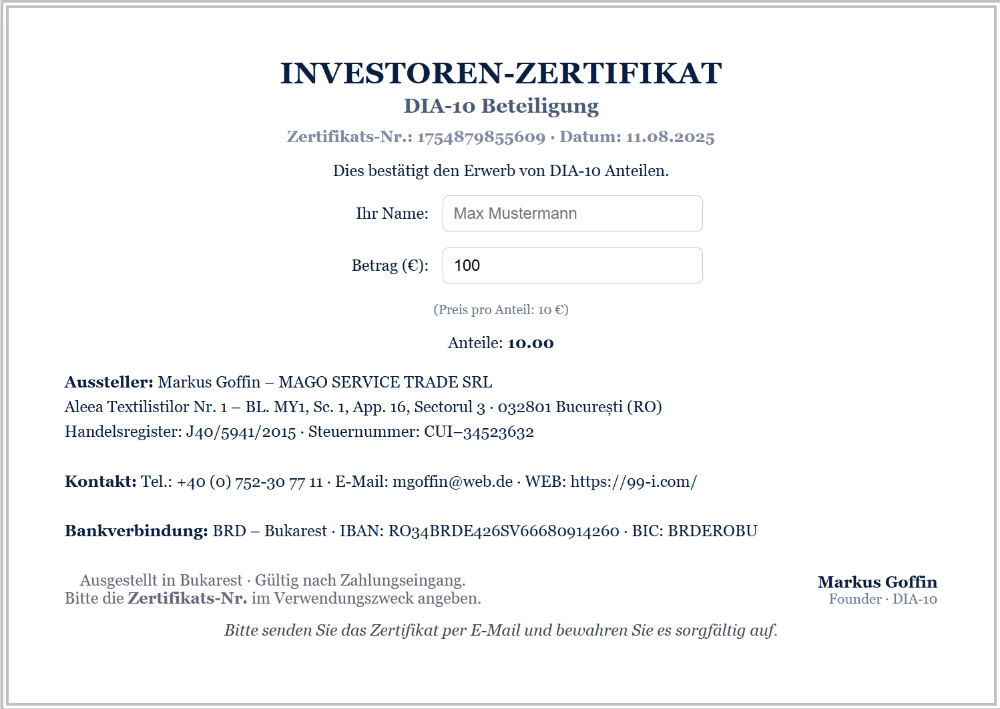
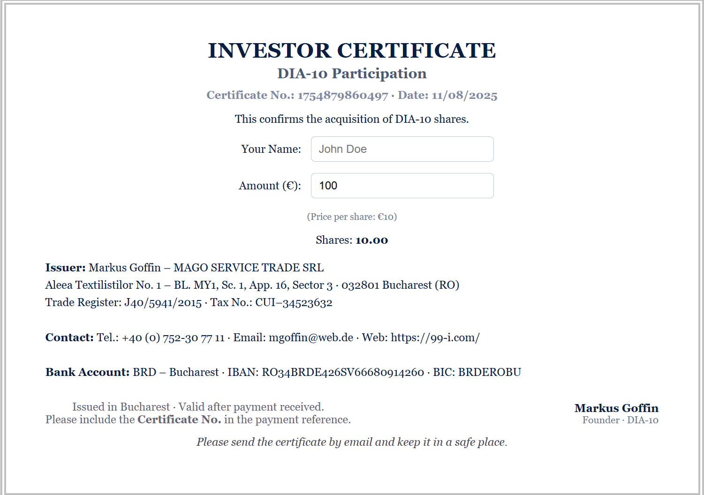
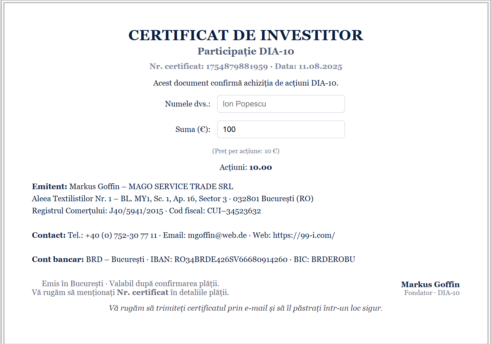
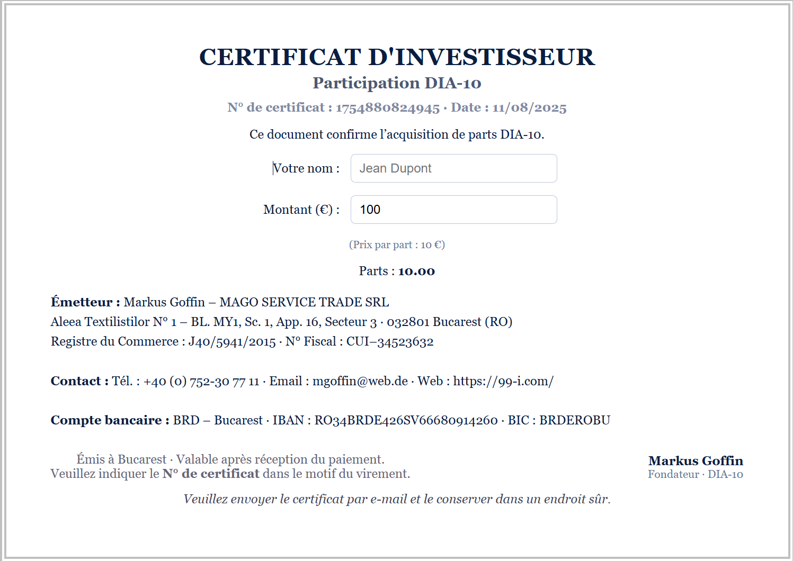
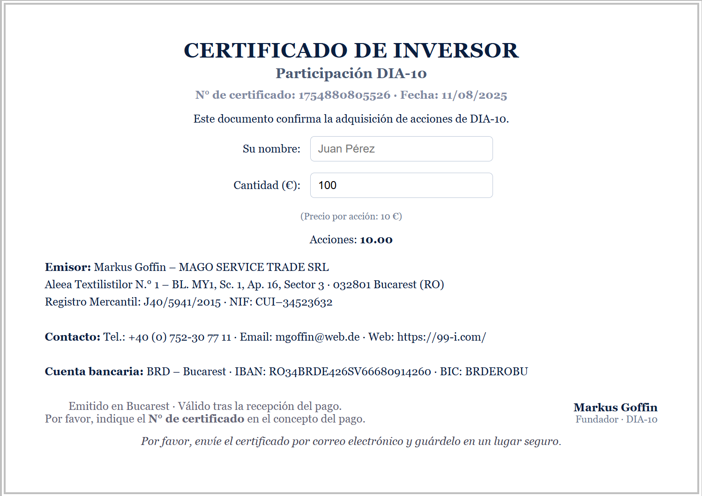
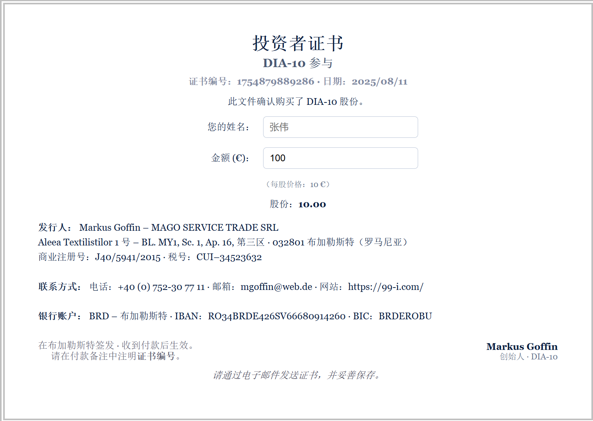
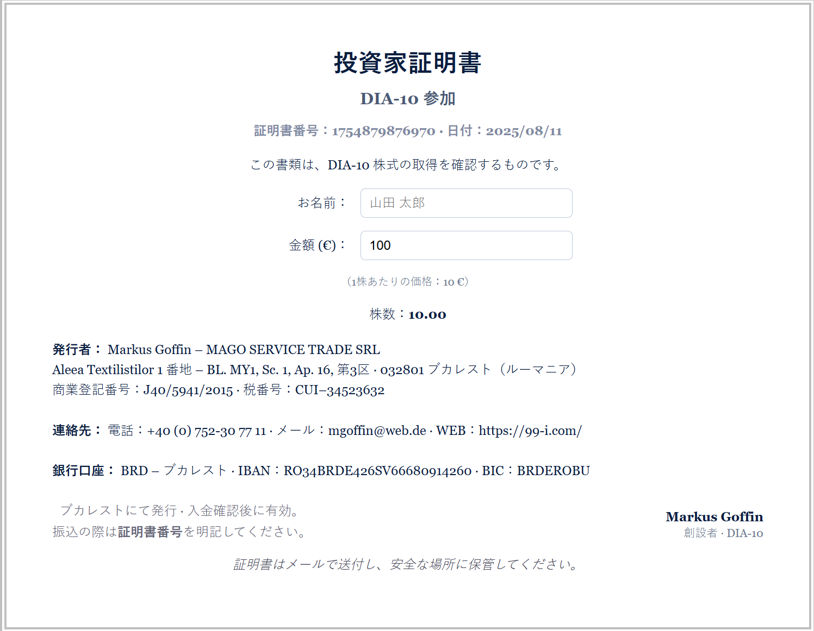

Certificates · Zertifikate · Certificado · Certificat · Certificat · Certificato · 证书 · 証明書
🇩🇪Deutsch

DIA-10 Investoren-Zertifikat (DE)
🇬🇧English

DIA-10 Investor Certificate (EN)
🇷🇴Română

Certificat Investitor DIA-10 (RO)
🇫🇷Français

Certificat d’Investisseur DIA-10 (FR)
🇮🇹Italiano

Certificato Investitore DIA-10 (IT)
🇪🇸Español

Certificado de Inversor DIA-10 (ES)
🇨🇳ä¸æ–‡

DIA-10 投资者证书 (ZH)
🇯🇵日本èª

DIA-10 投資家証明書 (JA)